CREATIVE COMMONS
Global SUMMIT
2022
A joyful celebration believing in the value of openness and sharing, creating a poseitive change with people from over 80 countries is taking place in Octover, in Korea.
2015.10.15(THU) ~ 16 (FRI)
@ National Museum of Korea, Art Center Nabi and more
Lecture
Listen to the speaker from various countries about the messeges of sharing and
opening

CC Exhibition
Appreciate various creations applying CC license of artists, organized from Art
Center Nabi.
Forum
Have the time to share your thoughts and opinions with experts for each topic
Workshop
Try creating your own work using open source license rather than just watching
CC Ignite
Get opportunities to network with CC affiliates around the worl, also after the
summit
Berkman professor of Enterpreneurial Legal Studies at Harvard Law School
Benkler studies commons-based peer productio, and published his seminal book The wealth of Networks in 2006.
SohYeong Noh
Director of Art Centre Nabi and A board memeber of CC Korea
As the main Venue for ne media art production in Korea, Nabi promotes cross-disciplinary collaboration and understanding among science technology, humanities and the arts.